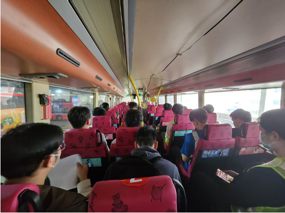
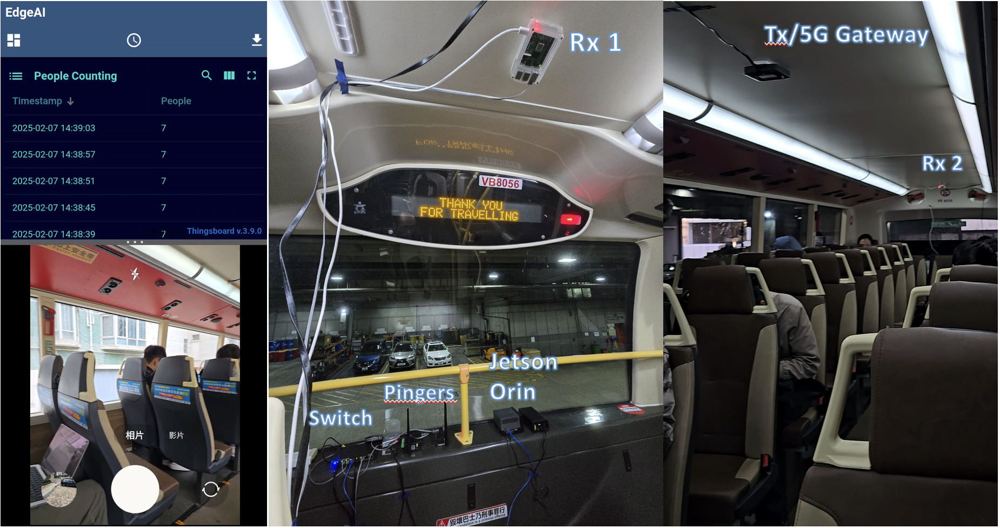
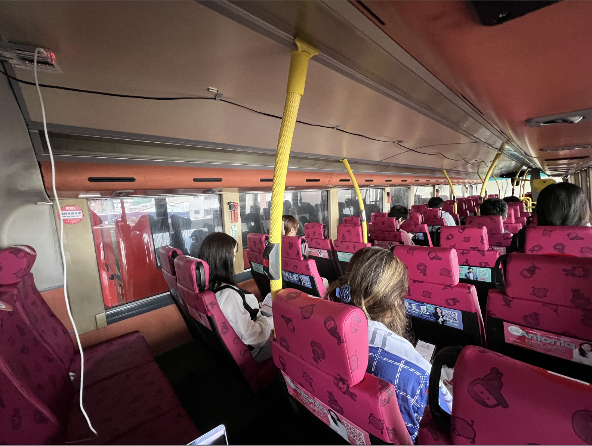

WiFi CSI Datasets for Passenger Counting on the Upper-Deck of a Double-Decker Bus in Hong Kong
WCNC 2025
A privacy-preserving approach to passenger counting using Wi-Fi Channel State Information in public transportation

The CountFi dataset supports research on CSI-based passenger counting with both single and multiple Wi-Fi receivers in the public transportation systems. It provides annotated Wi-Fi CSI data to develop and evaluate sensing algorithms for accurate, privacy-preserving passenger counting in public transportation systems. Unlike traditional camera-based approaches, the Wi-Fi CSI method offers enhanced privacy protection while maintaining accurate counting capabilities through learning of signal propagation characteristics affected by passenger presence and fidgeting.
The CountFi dataset was collected using Wi-Fi devices installed in the upper deck of double-decker buses operating on various scenarios in Hong Kong. Channel State Information (CSI) data was captured across different times of day, passenger densities, and bus operating conditions to ensure diversity.
The raw Wi-Fi CSI data was processed to extract features that correlate with passenger presence and fidgeting. The signal propagation characteristics change based on the number of passengers and their distribution in the bus, allowing for passenger counting estimation.
Ground truth passenger counts were manually recorded during data collection. These annotations were synchronized with the CSI data timestamps to create labeled data suitable for machine learning model training and evaluation.
Using Wi-Fi CSI data for passenger counting offers significant privacy benefits over traditional camera-based approaches. The CSI data captures only signal propagation characteristics and cannot be used to identify individuals, eliminating privacy concerns associated with visual surveillance.
The CountFi system uses strategically placed Wi-Fi devices to capture Channel State Information (CSI) data in the upper deck of double-decker buses. The system consists of:
The entire system operates in real-time, providing privacy-preserving passenger counts without capturing any personally identifiable information.

CountFi system architecture showing interconnected components
> 19,956,300
20
5
The CountFi dataset comprises three distinct collection periods, each designed to capture different aspects of passenger counting scenarios in double-decker buses:
_stop
_xm (where x represents relevant sections, for example,
_fm represents data collected from front section of the upper deck)
All three datasets include CSI data with corresponding ground truth passenger counts, enabling comprehensive analysis across different operational conditions.
Our dataset includes various passenger occupancy scenarios to enable robust model training and testing. Below are two representative examples showing different passenger densities:

This scenario features around 9 passengers in the upper deck of a double-decker bus, representing a medium occupancy case. The passengers are distributed throughout the seating area, providing varied signal paths for the Wi-Fi CSI data. This distribution allows algorithms to learn patterns associated with medium passenger density.
This scenario features around 20 passengers in the upper deck of a double-decker bus, representing a high occupancy case that challenges counting algorithms. Wi-Fi CSI patterns change significantly as more passengers enter the bus, providing rich data for model training and evaluation.
We provide baseline results using several state-of-the-art methods for multiple receiver Wi-Fi CSI-based passenger counting on our June 13, 2023 dataset:
| Method | Accuracy | F1-Score | GFLOPs |
|---|---|---|---|
| Direct Prob Avg | 90.99 | 90.98 | 3.44 |
| Re-weighted CSI Prob Avg | 91.45 | 91.39 | 3.44 |
| CSI Feature Concatenation Training | 92.59 | 92.49 | 3.40 |
| Adaptive RSSI-weighted CSI Feature Concatenation | 94.86 | 94.83 | 3.41 |
GFLOPs: Giga floating point of operations.
For more details on benchmark methodology and evaluation metrics, please refer to our paper.
The CountFi dataset is available for research purposes. Each collection period offers unique characteristics as described in the Dataset Structure section. Here we provide raw dataset, allowing researchers to process the data as they wish.
Stationary scenario data with suffix _stop collected from front, middle, and
end sections. Each PCAP file contains 1,000 CSI samples.
Mixed moving and stationary scenarios with suffix _xm, collected from
multiple sections. Each PCAP file contains 1,000 CSI samples.
Controlled environment data with bus engine off for minimal interference and cleaner signal patterns. Each PCAP file contains 12,000 CSI samples.
Includes all collected CSI data, from 2023 March to 2025 April, for comprehensive Wi-Fi CSI-based counting system evaluation.
By downloading and using this dataset, you agree to:
@inproceedings{guo2025rssi,
title={RSSI-Assisted CSI-Based Passenger Counting with Multiple Wi-Fi Receivers},
author={Guo, Jingtao and Zhuang, Wenhao and Mao, Yuyi and Ho, Ivan Wang-Hei},
booktitle={2025 IEEE Wireless Communications and Networking Conference (WCNC)},
pages={1--6},
year={2025},
organization={IEEE}
}
This work was supported in part by the Smart Traffic Fund (Project No. PSRI/31/2202/PR) established under the Transport Department of the Hong Kong Special Administrative Region (HKSAR), China. We thank all volunteers for their participations. Please acknowledge the dataset in your publications.
Attribution-NonCommercial 4.0 International
This dataset is licensed under the Creative Commons Attribution-NonCommercial 4.0 International License. You are free to share and adapt the material for non-commercial purposes, provided you give appropriate credit.